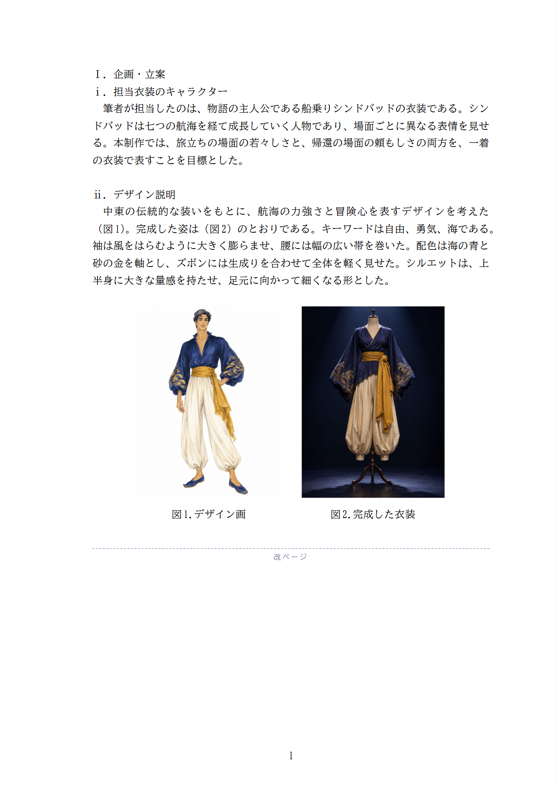
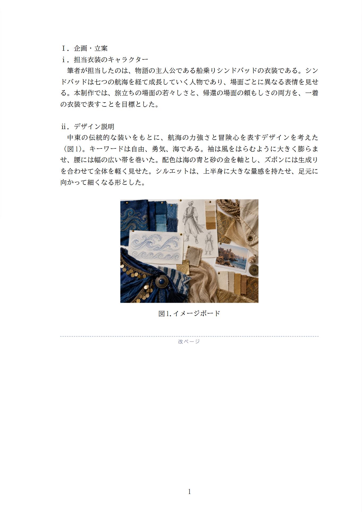
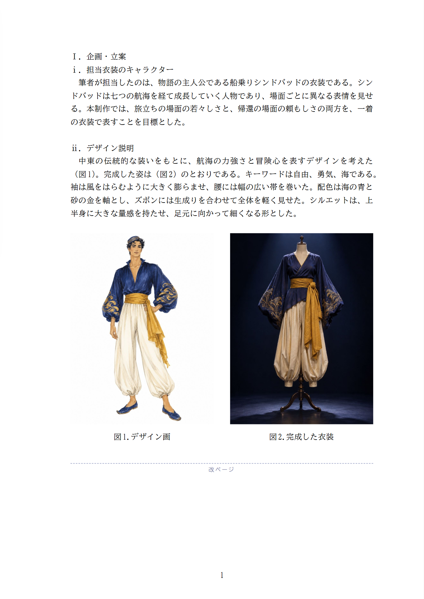
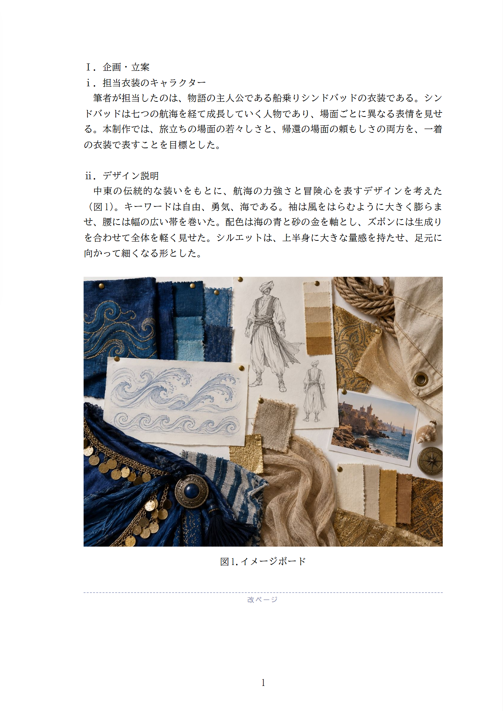
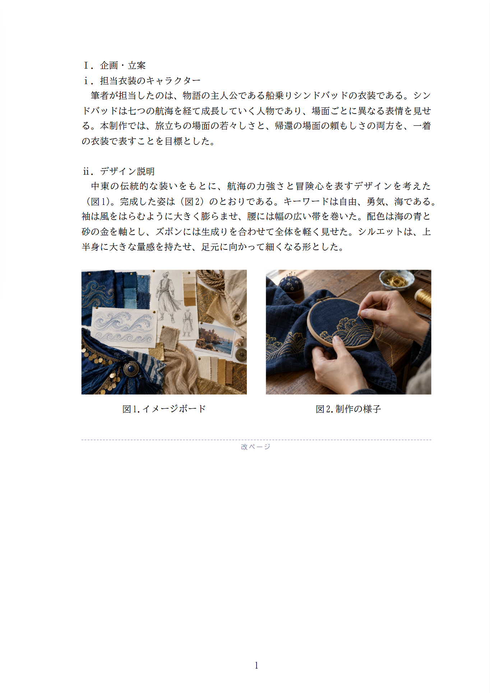

縦長の図が2枚
デザイン画と完成した衣装
横長の図が1枚
イメージボード
横長の図が2枚
イメージボードと制作の様子
いま



案B

約1.3倍（1枚が約7×9.5cm）。2枚で本文の幅いっぱいになるまで

約1.9倍（15×11cm）。本文の幅いっぱいになるまで

大きくなりません。いまでも本文の幅いっぱいです
並んだ図は、同じ倍率でそろえて大きくします。大きくできるのは、下の空き（1行分は残す）・横は本文の幅（15cm）まで・縦は12cmまでの、いちばん小さい所までです。
デザイン画と完成した衣装
イメージボード
イメージボードと制作の様子



約1.3倍（1枚が約7×9.5cm）。2枚で本文の幅いっぱいになるまで

約1.9倍（15×11cm）。本文の幅いっぱいになるまで

大きくなりません。いまでも本文の幅いっぱいです
縦長の図1枚（前の見本）は、縦12cm まで（1.5倍）です。図が3枚・4枚（2枚＋1枚、2枚×2段）のときも、まとまり全体を同じ倍率で大きくします。
どの場合も、大きくするのは下の空きの中だけなので、図が次のページへ押し出されることはありません。